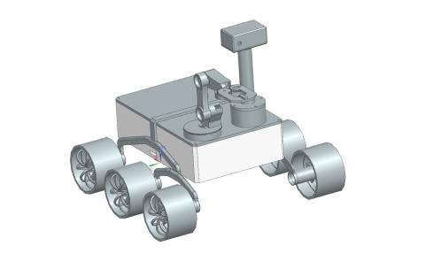
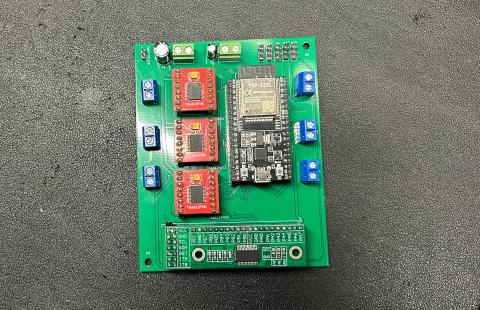

My first big project. I created this project the summer after my 1st year of community college. I created it at the time because I was really big into NASA and space after completing the NASA NCAS program. Essentially it's a program offered by NASA for community college students and it introduces them to the world of the space industry and NASA itself, the two main parts are online, but it really inspired me to work on space related stuff for my career. Being my first big project, I made a lot of mistakes, and honestly I never made it quite work right, regardless I learned so much from this project, and I'm grateful for attempting it with the skills I had at the time.
Inspired by NASA's Curiosity and Perseverance Rovers, this rover loosely tries to replicate them. It has 6 motors and 6 wheels, a camera, and a robotic arm (never quite worked). I designed this using Siemns NX which was cool because a lot of the aerospace industry uses this CAD software. The overall chassis design is quite simple though, but it was easy to assemble. Here is a screenshot of the completed 3D design:

Some of the bigger issues I faced mecahnically was the design of the wheels. I wanted them to look just like the Mars Rover ones but it took some time to figure out how to get the curved rims of the wheel, but I managed to figure it out with time. I also spent some time on the robotic arm, I was using this project as a reference: Mini Robotic Arm with Arduino I believe the issues with the robotic arm not working is more of an electrical problem though. I'll explain more later.
The electronics of this project center around two boards, a regular ESP32 and an ESP32-CAM. The ESP32-CAM is the main communication board it takes the web app comands, shows off the video feed and communicates to the controller board what motors and servos need to turn on. I made a perfboard version of this, then I created a PCB, here is the fully assembled PCB:
